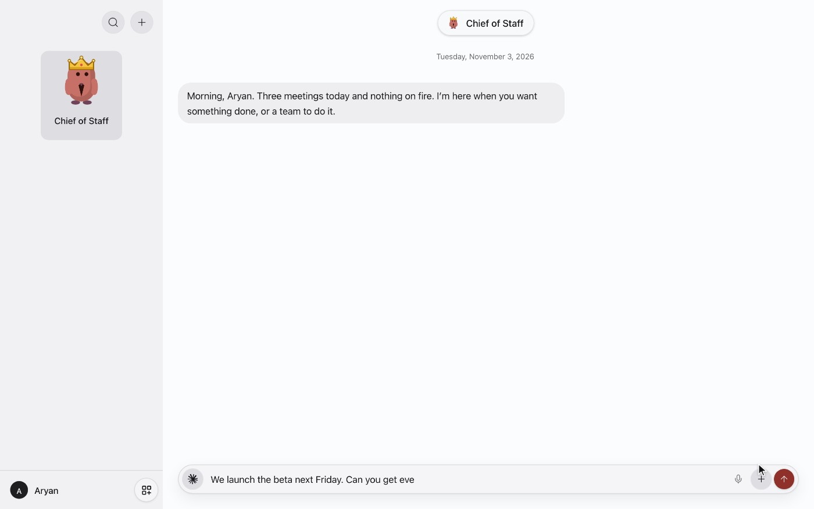

把接替顺序交给使用者
个人代理做到一半碰到模型额度上限时，用户通常需要复制背景到另一个窗口，并重新说明哪些步骤已经完成。Turnstone把任务、对话和模型选择放在同一个代理工作区，11月7日的0.8.7更新进一步允许设置连接的提供商与模型优先级，当前选择不可用时按这个顺序接替。它省掉的是一部分手工搬运上下文的工作，并没有增加原有订阅的额度。备用模型能读到背景，也不保证它以相同方式理解约束，尤其是尚未完成的外部操作和待确认决定。
Turnstone 0.8.7 · 产品／官方更新

个人代理做到一半碰到模型额度上限时，用户通常需要复制背景到另一个窗口，并重新说明哪些步骤已经完成。Turnstone把任务、对话和模型选择放在同一个代理工作区，11月7日的0.8.7更新进一步允许设置连接的提供商与模型优先级，当前选择不可用时按这个顺序接替。它省掉的是一部分手工搬运上下文的工作，并没有增加原有订阅的额度。备用模型能读到背景，也不保证它以相同方式理解约束，尤其是尚未完成的外部操作和待确认决定。
同一更新允许直接修改代理的工作规则条目，并保持保存的指令同步。对长期使用的助手，这比再发一句“以后别这样”更容易检查：使用者可以看到到底保留了哪条规则，删掉过期偏好，修正误学的习惯。更大的表格预览则帮助阅读代理返回的结构化内容，避免只能在窄聊天气泡里来回滑动。这些界面修改没有证明模型一定遵守每条规则，但让用户有具体的检查与纠正位置。整理规则仍要避免相互冲突，例如既要求发送前确认，又要求某类消息全自动发送。
官网把代理、聊天和记忆保存在Mac的可打开文件夹里，隐私政策也说明用户选择云模型时，请求会交给相应提供商，并受该账号的协议与设置约束。用Ollama运行本地模型是另一条路径，不能把它的性质推广到所有连接。0.8.7还增加通过官方CLI连接1Password以及Composio的OAuth连接入口；这些能力意味着更多服务可以被调用，不代表每个账号都拥有相同权限。连接前应核对实际授权范围，尤其在官网旧隐私说明和当前功能展示不完全一致时。
Mac应用本身以免费提供，用户自带订阅或API时仍承担模型费用与额度限制。11月6日更新索引已经提到可购买的OpenRouter额度，因此不能照抄10月28日事实页中“没有积分”的旧说法。云端持续运行在主页仍标为即将推出，0.8.7对主动检查恢复的改进又限定实验权限；不能据此承诺合上电脑仍能全天处理所有任务。对于希望少开几个模型窗口的人，接替顺序和规则编辑很实际，但能否完成任务还取决于Mac状态、连接可用性与所选模型的能力。